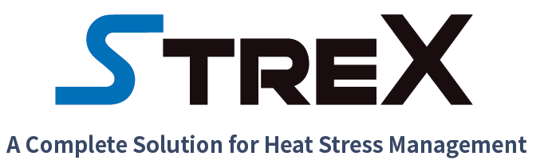

Beat the Heat.
All-in-One.
STREX is Pathway Intermediates' comprehensive anti-heat-stress solution — designed for Bangladesh's hot, humid climate and the performance demands of modern poultry and dairy operations.

One solution.
Every angle of heat stress.
Heat stress is the single largest productivity challenge facing Bangladesh's livestock sector. During peak summer months, THI (Temperature Humidity Index) levels regularly exceed critical thresholds — suppressing feed intake, impairing immunity, reducing egg production, and cutting daily weight gain across broiler, layer, and dairy operations.
STREX is formulated to address heat stress on multiple fronts simultaneously: electrolyte balance, antioxidant support, gut integrity, and metabolic efficiency — delivering a measurable performance buffer when animals need it most.
RS Poultry × Pathway Intermediates
— Official STREX Launch

On April 17, 2026, Pathway Intermediates and RS Poultry jointly held the official STREX launch in Bangladesh — marking the product's entry into the Bangladeshi livestock market as the company's flagship heat-stress solution.
The event brought together farm operators, feed industry partners, and veterinary professionals to introduce STREX's science and its application protocol for Bangladesh's climate conditions.
Featured in BD Magazine 2026.
Pathway Intermediates' Bangladesh operation and the STREX launch were featured in BD Magazine 2026, highlighting the company's commitment to the country's poultry and livestock sector.